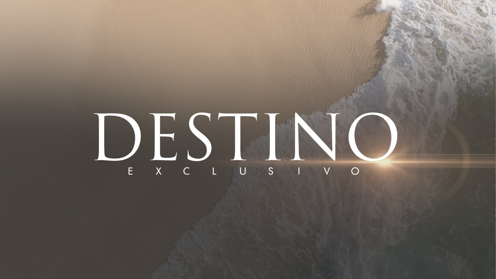

CASE STUDY / 02
Destino
Exclusivo
Cada lugar es el inicio
de una historia.
Destino
Exclusivo
Nace como un formato para NTN24, un canal acostumbrado a contar lo que está pasando en el mundo, en tiempo real, para millones de personas.
La pregunta fue simple: ¿qué pasa cuando dejas de contar la noticia… y empiezas a contar lo que se vive?
Así nace un formato donde el viaje deja de verse… y empieza a sentirse.
Construí la narrativa del formato, definiendo su estructura, tono e intención, y desarrollé los libretos a partir de esa visión.
En alianza con Hyatt Hotels Corporation, el formato se llevó a Costa Rica, Panamá, Jamaica y San José del Cabo.
Se emitió en televisión internacional y en digital, ampliando el alcance a una audiencia global.
"No era solo mostrar destinos. Era encontrar una forma distinta de contarlos."
Chapter 01
Jamaica
Explorando el ritmo del Caribe a través de cinematografía sensorial y momentos íntimos.
Como en las citas, no basta con estar.
Hay que saber contar quién eres.
Chapter 02
Costa Rica
La conexión entre paisaje volcánico y lujo sostenible, contada a través de texturas naturales y luz.
Chapter 03
San José del Cabo
La magia del desierto y el mar convertida en una narrativa de lujo y descanso.